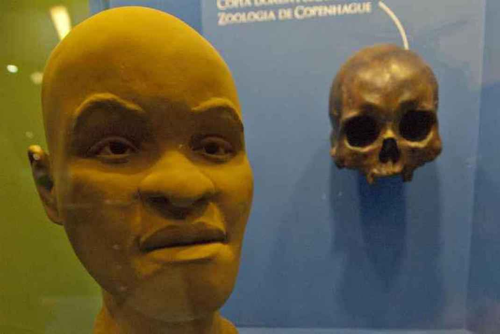
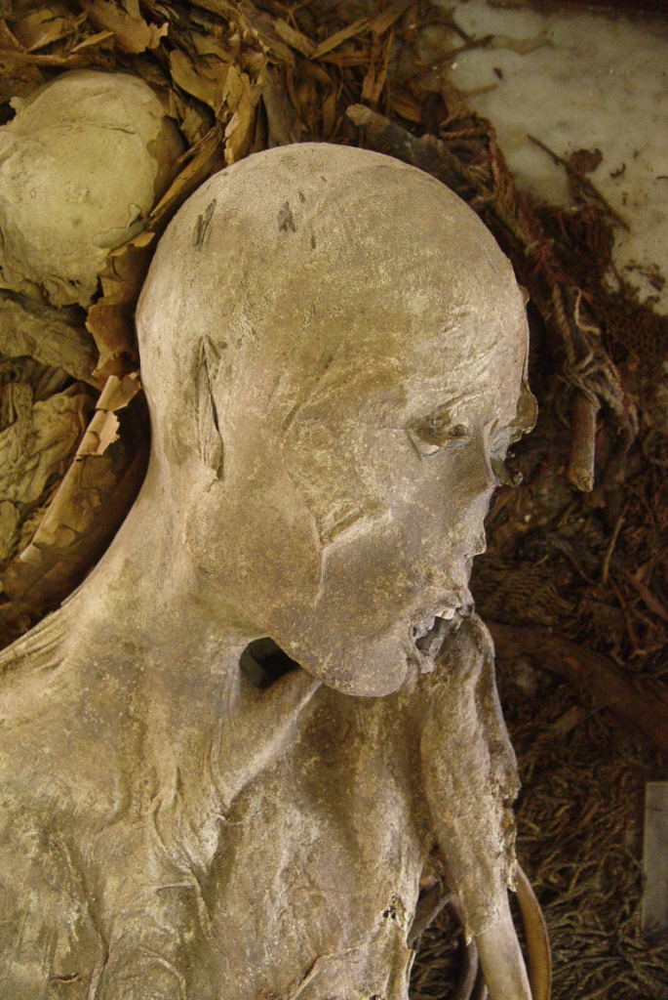
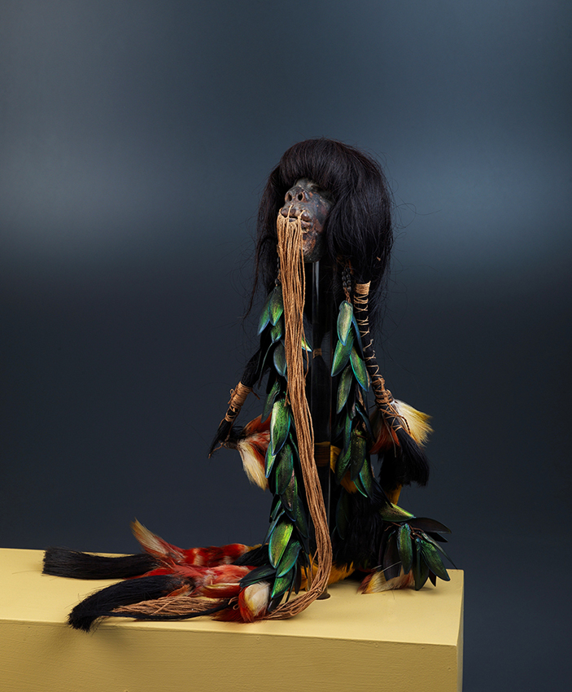
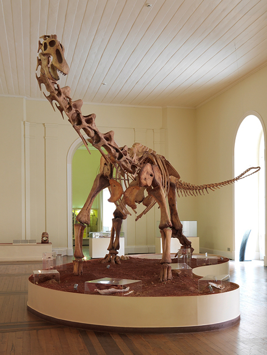
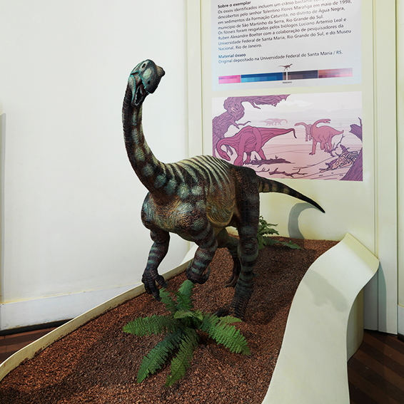
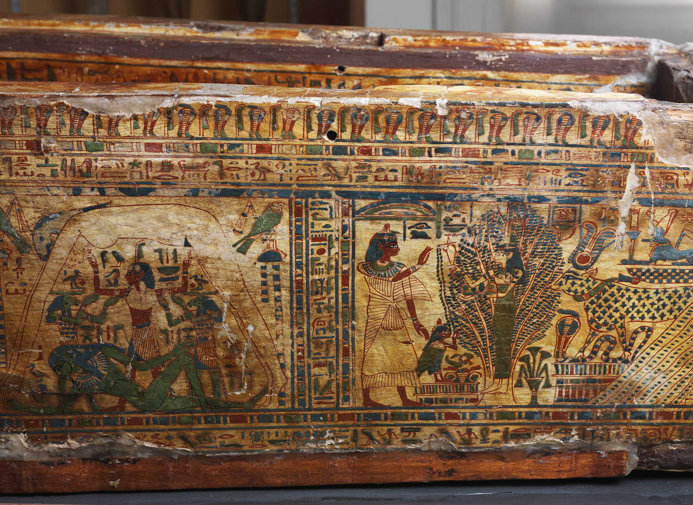
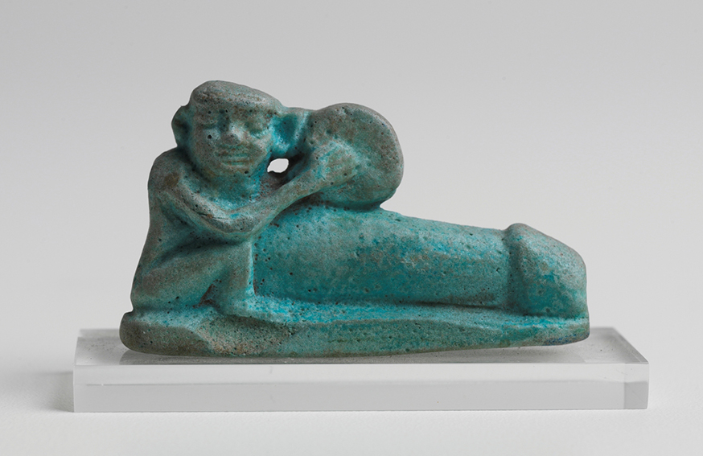

--- Exposições ---
Antropologia
O crânio de Luzia, a mulher mais antiga do Brasil
Descrição:
as inúmeras peças abrigadas no Museu Nacional do Rio de Janeiro, destruído por um , o crânio de Luzia e sua reconstituição facial são duas das perdas mais lamentadas por pesquisadores brasileiros. Paulo Knauss, diretor do Museu Histórico Nacional, também no Rio de Janeiro, classificou a perda de Luzia como "inestimável para todos os interessados em civilização".
Luzia é de inestimável valor científico por se tratar do mais antigo fóssil humano já encontrado no Brasil e nas Américas. O crânio, pertencente a uma mulher que viveu há mais de 11 mil anos, foi descoberto em uma gruta da região de Lagoa Santa, em Minas Gerais, em 1975, e é fundamental para se compreender como ocorreu a ocupaçãodo continente americano.
Múmia em território brasileiro
Descrição:
No Brasil, a preservação natural é rara devido ao clima tropical e ao solo ácido, que aceleram a decomposição do corpo. Por isso, os indivíduos achados em Goianá, Minas gerais, no século XIX de são tão interessantes. Esta descoberta foi doada ao imperador Dom Pedro II pela cafeicultora Maria José de Santana, dona da fazenda na qual localiza-se a caverna onde foram resgatados. O clima seco e frio de serra explica este achado raro no Brasil de corpos mumificados pertencentes a uma mulher e duas crianças. A mulher teria entre 24 e 26 anos, 1,48 metro de altura e deve ter morrido há cerca de 600 anos, antes da chegada dos europeus. Os bebês têm um mês e um ano de vida.
Embora seus corpos tenham sido encontrados juntos, na mesma caverna com restos de outros indivíduos, não é possível afirmar que sejam mãe e filhos. Seus corpos foram amarrados junto a ossos, bolsas trançadas em fibras, rede de dormir, uma conta grossa e uma cruz de fios. Estes objetos e o local dos achados indicam que ela seria do grupo botocudo, da etnia Maxakali, Kanacam ou Makuni. A caverna certamente era usada como cemitério.
Cabeça mumificada
Descrição:
Alguns povos da Amazônia desenvolveram técnicas extraordinárias de mumificação. Cabeças humanas ou de animais, encolhidas ou não, ficavam preservadas por anos, apesar do clima úmido e quente das florestas. Muitas delas podem ainda ser vistas em museus de todo o mundo, pois despertaram grande interesse científico e museológico, principalmente no século XIX.
Os Jivaro, da Amazônia Equatoriana, depois de retirar o crânio de dentro da pele, deixando os cabelos, faziam a pele encolher sem que a fisionomia se perdesse, produzindo algumas das mais extraordinárias mumificações conhecidas. As famosas cabeças encolhidas pelo chamado “povo da cachoeira” eram preparadas em rituais complexos e tinham um profundo significado espiritual.
Paleontologia
Preguiça gigante e tigre-dentes-de-sabre

Descrição:
Eremotherium Spillmann, 1948 Glossotherium Owen, 1840. Smilodon Lund, 1842. Réplicas e peças originais Esqueletos representativos do cenário do Pleistoceno brasileiro, há cerca de 1,8 milhões de anos. As preguiças-gigantes Eremotherium e Glossotherium, assim como o tigre-dentes-de-sabre Smilodon, são representantes do que se conhece como a megafauna extinta. Curiosamente, a montagem do exemplar determinado como Eremotherium foi realizada no início do século XX, quando se acreditava existirem no território brasileiro preguiças- gigantes apenas da espécie Megatherium americanum. Por este motivo, este exemplar é considerado um esqueleto compósito, formado por material original de vários indivíduos atribuídos ao gênero Eremotherium e por material replicado atribuído ao gênero Megatherium.
Titanossauro
Descrição:
Esqueleto da constituição óssea de um titanossauro descoberto no município do Prata, Minas Gerais. As rochas dessa localidade pertencem à Formação Adamantina (Grupo Bauru) e datam do Cretáceo Superior - 99,6 a 65,5 milhões de anos. Este exemplar apresenta um comprimento estimado de 13 metros e é representativo do grupo dos saurópodes, dinossauros herbívoros de pescoço comprido e cabeça pequena. Foi o primeiro dinossauro de grande porte brasileiro montado para exposição no país.
Unaysaurus
Descrição:
Unaysaurus tolentinoi. Leal, Azevedo, Kellner & Da Rosa, 2004.
Reconstituição do fóssil encontrado em sedimentos da Formação Caturrita, no distrito de Água Negra, ao sul do município de São Martinho da Serra, no Rio Grande do Sul. O fóssil representa o primeiro exemplar encontrado no país pertencente ao grupo Prosauropoda – dinossauros de hábito herbívoro, corpo volumoso e cabeça pequena sustentada por longo pescoço. O Unaysaurus tolentinoi viveu no período Triássico, 251 a 199,6 milhões de anos atrás..
Arqueologia
Caixão do sacerdote Hori
Madeira policromada. Esta cena de cosmogonia mostra a deusa Nut, personificação da abóbada celeste, despida e arqueada sobre o deus Geb, seu esposo e personificação da Terra. Separando os dois está Shu, o deus do ar, ajudado por dois deuses com cabeça de carneiro, representando os ventos. Nas crenças funerárias egípcias, tal cena era associada ao conceito de ressurreição: o morto se transformava em estrela no interior do corpo de Nut.
Amuleto Fálico
Figura macrofálica usada como amuleto, representando um homem tocando um tamborim.